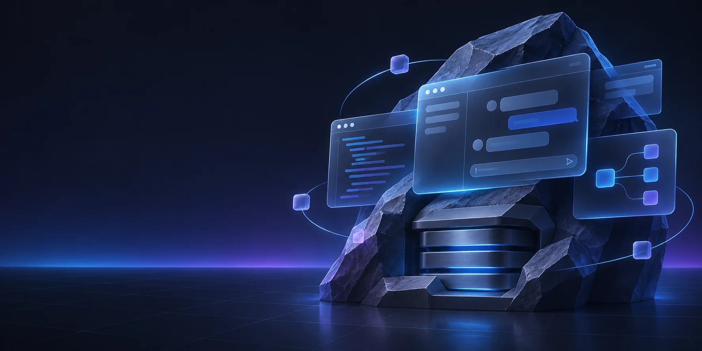

Your project, in the conversation.
Browse code in the Monaco editor. Use project-linked chat and tasks. Inspect diffs, use guarded commands, and keep an undo path.
PROJECTSEDITOR + DIFFSREVIEWABLE TASKSAN AI WORKSPACE THAT STAYS YOURS
Your models. Your projects. Your call. Skai brings AI chat, coding, documents, voice, and creative tools into one desktop workspace—running with local services you choose.
0.1.4 · TESTING RELEASE · WINDOWS + LINUX · SOURCE AVAILABLE

TOO MANY WINDOWS. TOO LITTLE CONTEXT.
A chat window can give you an idea. Then the real work starts: find the right file, open the model, move the answer, check the change, remember what happened.
Skai is built to keep those steps together. Start with a question or a project. Bring the context. Work with your model. Review what changed. You decide what stays.
From first question
to work you can review.
FOUR STEPS. ONE PLACE TO THINK.
Follow the thread from “what if?” to a result you understand.
Connect Ollama, LM Studio, or another supported local runtime. Pick the model for the job.
The model runs through a service on your computer. Skai does not silently switch your chat to a hosted model when something is unavailable.
Open a project, attach a document, or keep a conversation going. The work has somewhere to live.
Yes. Documents-only grounding can restrict a response to the files attached for that turn, excluding project, memory, and skill context.
Explore an idea, edit a file, run an approved task, create an image, or work with audio and video.
Skai also brings together document chat, voice, model discovery, image workflows, saved personas, themes, and seven animated desktop companions.
Inspect proposed project changes. Keep the useful parts, undo, or ask for another pass.
Project work is designed to stay reviewable. Supported Coding Agent commands run inside OS isolation, and Skai refuses them when it cannot establish the required sandbox.
Open any question above for the details most product pages leave out.
MORE THAN A CHAT BOX
Different kinds of work, with the same useful rhythm: bring context, make progress, stay in control.
Browse code in the Monaco editor. Use project-linked chat and tasks. Inspect diffs, use guarded commands, and keep an undo path.
PROJECTSEDITOR + DIFFSREVIEWABLE TASKSDiscover local models, compare options, attach documents, search and organize conversations, and use local voice workflows where supported.
OLLAMALM STUDIOVOICE + FILESTry local image generation with Diffusers or connect ComfyUI. Tune the desktop, save personas, and let a companion wander around it.
DIFFUSERSCOMFYUISEVEN COMPANIONSLOCAL BY DESIGN. CLEAR ABOUT THE EXCEPTIONS.
For the current release, chat runs through the local model runtime you choose. Skai does not send chat prompts to hosted model providers or quietly fall back to the cloud.
You choose the model.
Connect the local runtime you want to use.
No hidden cloud route.
If local inference is unavailable, Skai does not silently reroute your chat.
Some actions use the internet.
Search, GitHub, and catalog or model downloads connect when you choose those actions.
Local chat is the product boundary today; it is not a claim that the entire computer is offline. Optional services like web search and GitHub need the network. Model downloads need the network too. User-connected cloud chat is a future direction, not an available feature in this release.
NO HYPE WITHOUT THE FOOTNOTES
Skai is actively developed. Some workflows have focused test evidence; others still need real-world acceptance. Here’s the honest snapshot before you invest your time.
Read release readinessLocal chat and model discovery, project editor, themes, conversation tools, and more.
Voice, image generation, Coding Agent, terminal, and companions have known acceptance gaps.
Hosted model routes are not available. No release date promises are made here.
CURIOUS ENOUGH TO TRY IT?
Start with the current testing release, or run from source if you want to see how it works under the hood.
BEFORE YOU CLICK DOWNLOAD
macOS is not yet covered by the release acceptance matrix. Check the release notes and readiness report before installing.
Know what’s ready before you installWANT THE WHOLE PICTURE?
Short on time? Start with the capability map. Want to build? Go straight to the architecture.
The site gives you the shape of the idea. The docs give you the receipts.
LOCAL FIRST · REVIEWABLE WORK · STILL IN THE MAKING
Skai is a tool for the work you choose to do with it. Make the next step yours.
Step into the project